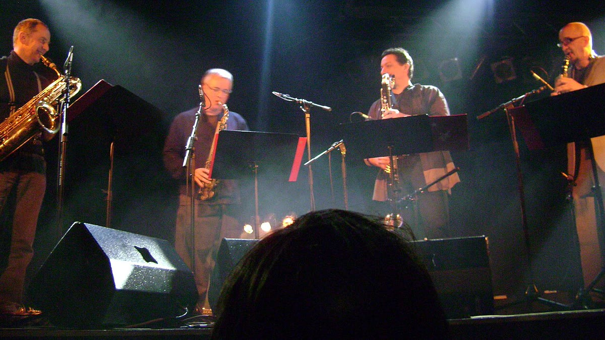

一场演出是怎么被"做"出来的HOW WE MADE IT
“冬日之声”是萨克斯社每年冬天的固定专场，从 2016 年开始，到今年已经是第九届。 和春季那场偏向爵士即兴的“金色号角”不同，冬专更看重“好听”——我们把大量的流行与影视配乐重新配器， 让四个声部像四把不同的嗓子，一起讲一个温暖的故事。
筹备从十月中旬就开始了。第一周确定曲目，第二周声部长开始写谱，第三周进入分声部练习， 十一月中旬开始全团合排。今年的难点是《Libertango》——原曲的速度变化极多， 四个声部只要有一个人的呼吸早了半拍，整段就会散掉。为此我们在排练厅的地板上贴了胶带做标记， 把每一段的进入点标出来，反复练了整整六周。
演出前一晚的彩排，灯光师把面光调得太亮，站在最左边的同学几乎看不清谱子。 最后是社里的乐务跑回宿舍，拿了一盏台灯放在谱架后面——那盏台灯，后来成了那晚照片里最温柔的一处光。
当晚曲目单PROGRAM
- 《Autumn Leaves》开场 · 四重奏
- 《Blue Bossa》Bossa Nova · 中音二重奏
- 《Libertango》皮亚佐拉 · 全团改编
- 《月亮代表我的心》全场大合唱
- 《What a Wonderful World》返场 · 次中音独奏

活动信息DETAILS
- 活动名称
- “冬日之声”萨克斯专场音乐会
- 时间
- 2025 年 12 月 21 日 19:30
- 地点
- 学生活动中心 音乐厅 A-201
- 参演
- 社员 18 人 · 四个声部
- 观众
- 约 260 人
- 曲目
- 5 首 · 含 1 首返场
下一次，台上可能就是你NEXT
每年冬天，我们都会在新社员里挑几位第一次登台的同学，把他们安排在声部中间的位置—— 这样即使紧张，旁边也总有人接着。今年那两位第一次上台的同学，一个吹中音，一个吹次中音， 演出结束后在后台抱在一起哭了很久。
如果你也想在某个冬天的晚上，站在那束光里吹完一首完整的曲子， 欢迎回到招新主页填写报名表。我们不要求你现在就会，只要求你愿意开始。